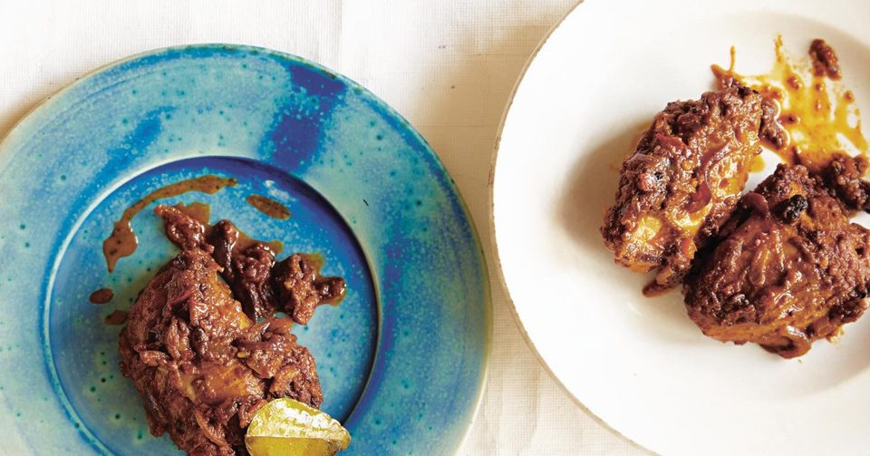

Recipe list -
Home page | Recipe list | Contact us
A Sri Lankan street food specialty of a nested egg in a coconut milk and rice-based small crispy crepe topped with cilantro.
400ml coconut cream
20g fresh yeast, or fast-action dried yeast 7g
1 tbsp caster sugar
500g rice flour
3 egg whites
for the pan vegetable oil
to serve (optional) eggs
Step 1
Stir the coconut cream, yeast and sugar in a bowl and leave in a warm spot for 45 minutes or until risen and frothy.
Step 2
Sift the rice flour into the mixture and whisk until a smooth batter forms. Cover the bowl and leave in a warm place for 3-4 hours or until the batter has doubled in size – the rising time will vary considerably depending on the room temperature (the warmer, the better). Just before cooking, lightly beat the egg whites with a fork until they are foamy, then stir into the hopper mixture with 1 tsp of salt.
Step 3
Heat a hopper pan or a small non-stick frying pan over a high heat, wipe the pan lightly with oil, then pour in a 60ml ladleful of the mixture. Swirl to coat the sides of the pan, leaving a small pool of mixture in the centre. Crack in an egg (if using), then cover the pan with a lid and steam the hopper for 2-3 minutes or until the centre is firm and the sides are golden and crisp. Keep the cooked hoppers warm and repeat the process until all the batter has been used.

A Sri Lankan dessert classic! A delicious and creamy Baked Cardamom Spiced Coconut Custard and sweetened with unrefined Jaggery or sugar A Sri Lankan twist to the caramel flan, that is deliciously decadent!
Sri Lankan Watalappan recipe
4 eggs, plus 2 egg yolks
125ml kithul syrup
6 green cardamom pods, seeds crushed
¼ tsp grated nutmeg
½ tsp vanilla extract
400ml coconut milk
toasted cashews, crushed, to garnish
toasted coconut flakes, to garnish
Step 1
Heat the oven to 170C/150C fan/gas 3. Put six ramekins into a shallow oven tray and fill the tray with enough water to reach halfway up the ramekin
Step 2
Crack the whole eggs and yolks into a mixing bowl, whisk well and keep to one side.
Step 3
Heat the kithul syrup, cardamom seeds, nutmeg, vanilla and ¼ tsp of fine sea salt in a pan over a medium heat and simmer for 2 mins. Add the coconut milk and whisk well. Bring up to just below boiling then take off the heat.
Step 4
Ladle a little of the hot mixture into the eggs to temper, whisking well. Add another ladle, whisking again, then pour all of the eggs back into the pan of coconut milk. Give it a final whisk, then tip the mixture into a jug.
Step 5
Fill each of the ramekins to the very top, then put the tray in the oven and bake for 25-30 mins or until the custards have a gentle wobble in the middle but are set around the edges. Carefully remove and let them rest for 15 mins. Garnish with the cashews and coconut. They can be eaten hot or cold.

This is a take on a classic Sri Lankan dish that's been westernised for home cooks. Traditionally, cooking in the country is done over heat, but this recipe is baked in the oven
Sri Lankan Chicken recipe
8 chicken thighs, skinned
½ onion, quartered
5 cloves garlic
1.5cm piece ginger
1 tbsp chilli powder
½ tbsp ground cumin
½ tsp ground coriander
1 tsp ground turmeric
5 black peppercorns
2 tbsp soy sauce
1 tbsp caster sugar
90ml vegetable oil
4 tbsp tomato ketchup
½ lime, juiced
1 tsp sea salt
2 bay leaves
Step 1
Put all the marinade ingredients into a food processor and whizz until you have a coarse paste. Put the chicken into a shallow ovenproof dish and pour over the marinade. Mix well, cover and marinate for 30 minutes.
Step 2
Heat the oven to 180C/fan 160C/gas 4. Cover the dish with foil, poke several large holes in it and bake for 60 minutes until the chicken is cooked and the sauce has reduced.
Sri Lankan Lentil curry recipe
150g masoor dahl (red split lentils)
1 tsp vegetable oil
½ tsp black mustard seeds
½ small red onion
6-8 curry leaves, fresh, frozen or dried
½ tsp hot chilli powder
1 tsp (or you can use 1 tsp ground coriander powder and ½ tsp ground cumin) Sri Lankan curry powder
¼ tsp ground turmeric
5cm cinnamon stick
125ml coconut milk
fried onions, fried garlic, fried curry leaves and fried chillies, to garnish
Step 1
Wash the lentils. Heat the oil in a pan over a medium heat and, when it’s hot, add the mustard seeds and let them start to pop. Add the onion and curry leaves, and mix in. Add the chilli powder, curry powder and turmeric, stir and cook for 5-10 seconds. Add the cinnamon stick and a pinch of salt. Mix to coat with the spices. Cook for about 3 minutes until fragrant.
Step 2
Add the drained lentils to the pan with 250ml of water, partially cover the pan and cook for 10 minutes. Add the coconut milk and ¾ tsp of fine sea salt, and simmer for 12-15 minutes or until the lentils are cooked and tender. Taste and adjust the seasoning if needed.
Step 3
Finish the lentils with fried onions, garlic, curry leaves and chillies, if you like.
| |
Home page | Recipe list | Contact us
© 2023 Delicious Recipes. All rights reserved.